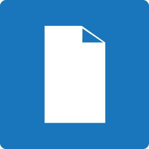
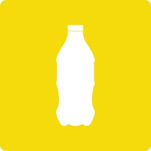
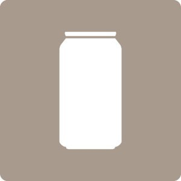
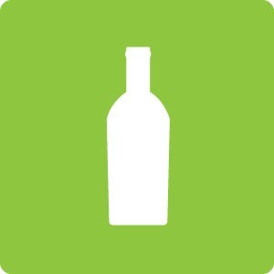
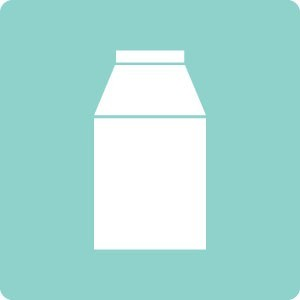
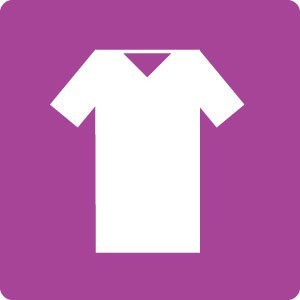
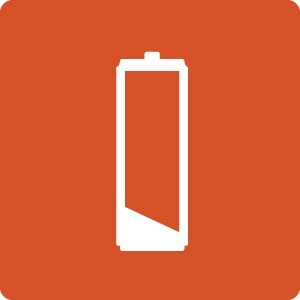
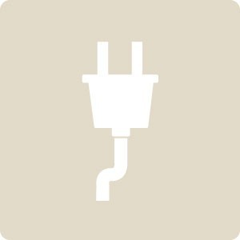

¿Qué se puede reciclar?

Papel/Cartón
Diarios, revistas, folletos, envases de cartón.

Plástico
Botellas, tapitas, telgopor, papel film, bolsas, envases, potes, bidones, vajilla descartable.

Metal
Aerosoles, llaves, bandejas de aluminio, papel aluminio, candados, griferías.

Vidrio
Botellas de bebidas, frascos, vajilla de vidrio.

Tetrabrik
Envases de yogurt, leche, jugos, cremas, salsas.

Telas
Ropa en desuso que no pueda ser donada, trapos.

Aceite vegetal
Aceite vegetal usado.

Pilas
Pilas alcalinas, pilas recargables, baterías de dispositivos electrónicos.

Dispositivos electrónicos
PCs, notebooks, tablets TVs, teléfonos.